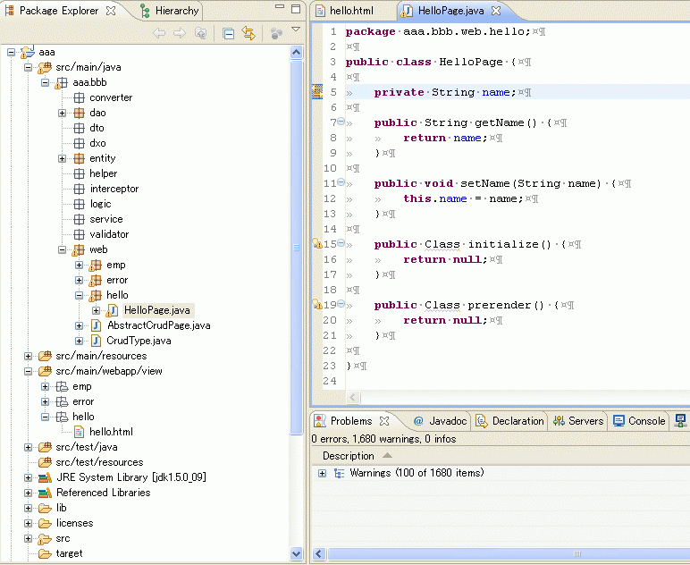

How to use Scaffold
概要
DoltengのScaffold機能は、あるテーブルに対するCRUD(Create Read Update Delete)処理を行うアプリケーションを自動生成します。
使い方


SeasarWikiのDoltengプラグイン機能覚え書きも参考にしてください。
Teedaをご利用の方は、 Teeda Extensionのファーストステップもご覧ください。プロジェクトの新規作成
コミッタのブログのこちらも参考にしてください。
Eclipseの「File」-「New」-「Project」を選択し、「Dolteng」のカテゴリから「Dolteng Project」を選択します。
いろいろなタイプのプロジェクトを選択することができます (テスト済みの組み合わせ)。まず「Project name」、「Root Package Name」を入力してください。

Application Typeを選択します。
Persistenceを選択します。
Presentationを選択します。
Server Managementを選択します。
Nextボタンを押すと、プロジェクトのディレクトリレイアウトの設定画面にすすみます。
Finishボタンを押すと、最終的に以下のようなプロジェクトが作成されます。
HTML、Pageクラスの作成
Teeda用のHTMLを作成するには「File」-「New」-「Other」-「Teeda HTML」を選択します。
保存場所を選択します。
HTMLの表示を確認するためにはAPサーバを起動後、ポップアップメニューから「View on Server」を選択します。
HTMLからPageクラスを作成する場合は、ポップアップメニューから「Create New Page Class」を選択します。
Pageクラス作成ウィザード
例えば以下のHTMLに対しては、
以下のPageクラスが作成されます。
Pageクラスを作成する時に、「Items」に後方一致するIDを持つタグがあれば、クラス名としてDTOを指定することが出来ます。 その際、セルの右側の「...」ボタンを押下すると、DTOを作成するウィザードが起動します。
HTMLからPageクラスへのダイナミックプロパティを追加する場合は、 id属性をもつタグのid以外の属性を選択してポップアップメニューを開き 「Add Dynamic Property」を選択して開いたウィンドウに表示されたid以外の属性一覧から属性を指定すると それがダイナミックプロパティとしてPageクラスに追加されます。ダイナミックプロパティのデフォルト値はウィンドウで定義されます。
DatabaseView
DoltengにはDBのテーブル情報を表示するDatabaseViewがあります。 DbLauncherを使用して H2 Database Engine を起動後 「Window」-「Show View」-「Other」から開いてください。

DatabaseViewからDao及びEntity、Scaffoldを作成することができます。
SQLファイルとDaoクラスの相互遷移（S2Dao）
S2Daoを使っている場合は SQLファイルとDaoクラスの遷移を行うことができます。
- Ctrl+3またはポップアップメニューの「Open Dao Pair」でDao～SQLファイルを遷移する。
- S2Daoでは、Daoクラスの対象のメソッド名の付近にカーソルを置くと、そのメソッドに対応するSQLファイルに遷移することができる。
- 対応するSQLファイルが存在しない場合、SQLファイルを生成するウィザードが起動する。
SQLファイルからDTOの自動生成
SQLファイルを右クリックして、ポップアップメニューの「Create New Dto」でDTOを作成することもできます。
マーカー
コミッタのブログのこちらも参考にしてください。
Doltengで使われる代表的なマーカーとしてPageマーカーとDIマーカーがあります。
PageマーカーはHTMLのid属性とPageクラスのフィールドをマッピングします。 Ctrl+5でHTML～Pageを遷移することもできます。
DIマーカーはDIされる(だろう)クラスをエディタの左側にマーカー表示します。 左側にある「DIされるっぽいアイコン」をクリックした所です。 「Jump to EmpServiceImpl#」をさらにクリックすると、EmpServiceの実装クラスにジャンプします。 Javadoc表示は実装クラスのクラスコメントをまず探し、Javadocが記述されていなければ、 インターフェースのクラスコメントを追加で探す様になっています。
その他
ポップアップメニューからさまざまな操作を行うことができます。
ドキュメントを見たい場合は、ポップアップメニューからView ～ Helpを選択してください。
コミッタのブログのこちらも参考にしてください。
プロジェクトプロパティの「Use Remote Help」のチェックボックスをONにする事で、 seasar.orgに配置されているマニュアルを見に行くようにする事も出来ます。
convention.diconへのMockクラスの一括登録を行うこともできます。
そのほか以下のように各種遷移が行うことができます。
- Orm.xmlとDao、Entityクラスの相互遷移（KuinaDao）
- Ctrl+3またはポップアップメニューの「Open Dao Pair」でDao～Orm.xmlを遷移する。
- Ctrl+4またはポップアップメニューの「Open Entity Pair」でEntity～Orm.xmlを遷移する。
- 対応するOrm.xmlが存在しない場合、プロジェクトのPreferencesの「OrmXmlPath」で設定したパスにOrm.xmlの雛形を生成する。
- HTMLファイルとPage、Actionクラスの相互遷移（S2Dao）
- Ctrl+5でHTML～Pageを遷移する。
- Ctrl+6でHTML～Actionを遷移する。
- 項目に対応関係がある場合、Pageクラスのエディタにマーカーを表示する。
- マーカーはプロジェクトの設定で「Use Page Marker」にチェックすれば表示される。
- マーカーはPageクラス、HTMLファイルの更新に同期する。
- マーカーを手動で更新するにはポップアップメニューから「Refresh Marker」を選択する。
ショートカットキーは「Window」-「Preference」-「General」-「Keys」で変更することができます。